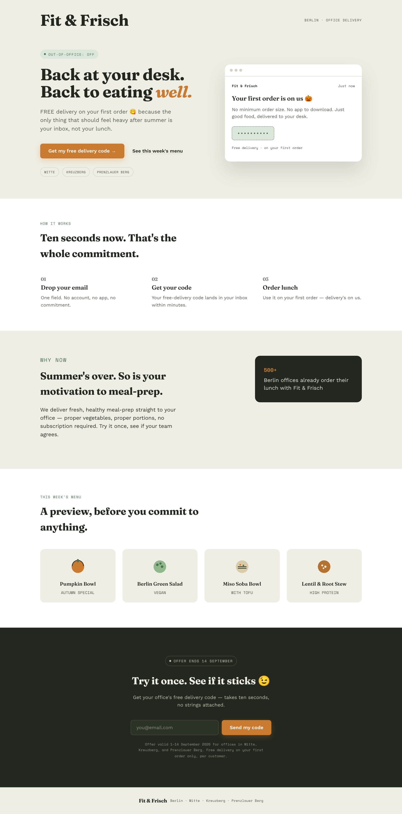

Landing page · Claude
Fit & Frisch · Back to Work
A landing page for a “Back to Work” campaign: Office workers in Berlin leave their email and get a free-delivery code for their first healthy lunch order.
About this project: Fit & Frisch is a fictional brand created for a course task. The offer, menu and the “500+ Berlin offices” figure on the page are invented for the scenario.
Scenario
You work for Fit & Frisch, a small healthy meal-prep chain. The owner says: "We want more customers and to become better known this autumn. Put together a campaign!"
Campaign goal - "Back to Work"
Generate 150 qualified leads (email addresses submitted via a landing page) from Berlin office workers in Mitte, Kreuzberg, and Prenzlauer Berg between 1–14 September 2026, via an Instagram and Google ads campaign offering a free-delivery promo code redeemable on their first order.
How I built it
- Goal and plan with ClaudeI defined the campaign goal, audience and offer, and planned the page sections with Claude.
- First build with ClaudeClaude built the page for one scenario as a single HTML file.
- My edits in VS CodeI reworked the structure, rewrote the copy, and changed the colours with VS Code.
The landing page
Hero
“Back at your desk. Back to eating well.” One button for the code, and an inbox card that previews the email.
How it works
Three steps:
- drop your email
- get your code
- order lunch
Menu + final call
A preview of four dishes, then the email form with the offer validity.

AI use. AI-assisted
Claude helped plan the page and wrote the first version of the code. I set the goal and offer, and edited the structure, copy and colours myself.